Meet Kobo
Kobo is a homing pigeon. Homing pigeons always find their way back and carry messages, which is what RecoverKit does for the customers a business is losing. Every kobo counts.



The animation follows Disney's 12 principles: anticipation (the crouch), arcs (the boomerang flight out and back), squash and stretch (take-off and landing), follow-through (the tail lags the turns), secondary action (wing flaps, the pigeon head-bob, blinks), and a long rest so it never nags. It stops for people who turn on Reduce Motion.